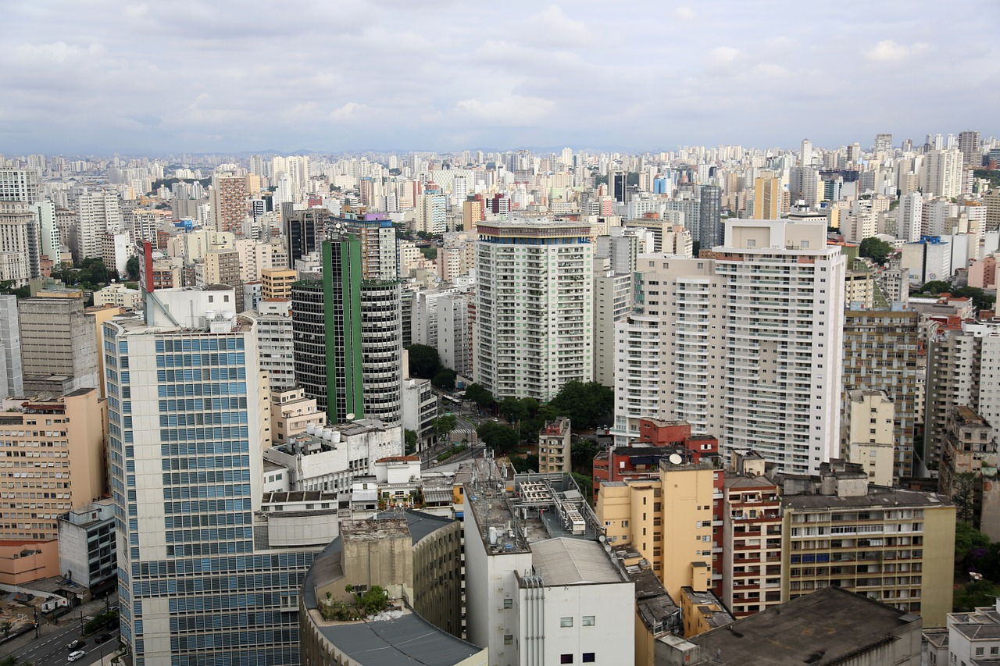

Recomendaciones
- de lugares veganos -
RÍO DE JANEIRO, BRASIL
Una ciudad hermosa, llena de colores y sonrisas.
Con pocas opciones veganas, quizá hasta contadas con los dedos de una mano.
Pero a la vez podemos disfrutar de comer una porción de arroz blanco con feijoada que son porotos especiados.
Nutritivo y local.
BUENOS AIRES, ARGENTINA
Buenos Aires, un lugar para disfrutar del veganismo.
Tiene muchos lugares con opciones veganas y con opciones deliciosas y suculentas.
SAN PABLO, BRASIL
Ciudad muy parecida a Buenos Aires, tiene muy buenos lugares con opciones de comida vegana.
Mercados grandes y opciones variadas de artículos veganos de fácil acceso.
Me sorprendió mucho y me gustó un montón.